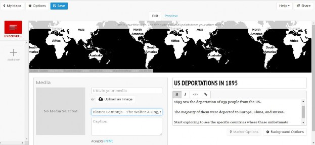
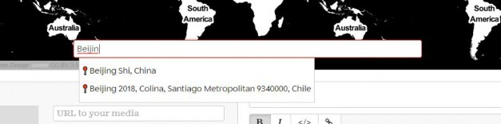

How to Use Knight Lab's Story Map
Introduction
Knight lab’s StoryMap is a web-based platform that allows the user to create and share maps. Unlike ArcGIS, it is very simple to use. It functions very similarly to Prezzi, by creating a presentation with a series of slides through which you can tell a story and add text, images, and videos to the user’s specifications and level of technical skill.
You can see an example here, which was created using deportation data from the US in 1895
How to Creat Your Map
- To begin with, click on “Make a StoryMap” and sign in using a gmail account (no need to create a specific StoryMap account, your personal or SLU email will do).
- When the dialogue box prompts you, enter a title for your map (don’t worry, nobody will see this, it’s purely for your reference). I used “History of US Deportation” for my title.
- Your map editing screen will look like this when it is blank:
First, let’s create a title slide. Note that when you are done, this slide will show the entirety of your map at a glance.
- Enter a title in the Headline box. (This will be the title your viewers will see, not the one you chose to identify the map earlier). I have chosen “US DEPORTATIONS IN 1895”
- After this, you can enter any text you want in the box below the Headline, and you can choose to use bolds, italics, insert links, etc. My text for this section is three lines and I have chosen to bold it. My screen now looks like this: 
- If you click on the “Background Options” button below the text box, you will be able to alter some settings for the textual section of your slide, such as the background color. I have chosen #26181b as my color, but you can also choose from a palette or upload images.
- On the Media section of your screen, you can add links, images, and credits. I have left it blank except for the credits, where I have written my name, the center’s name, and the institutional affiliation.
- By clicking on the “Options” button on the top of the page, you will be allowed to alter some basic settings for your map. For instance, you could use an image instead of a map (you can see this beautiful example that uses Bosch’s Garden of Earthly Delights paining as a base). If you prefer to stick to a map, you can click on the dropdown menu and select from the number of options offered or import your own map from MapBox. For my example I am using the “Stamen Maps: Toner Lite”.
- Before moving on, you can save your progress by clicking on the blue “Save” button on top of the page. You can also click on “Preview” right on top of your map at any point. This will allow you to see the end product (how your presentation will look like). Click on “Edit” to continue creating
- Create your first slide. Click on the “Add Slide” sign on the left of your screen. A new slide will appear that is, as of now, empty of content. Follow the steps 1-4 above to generate content.
- To insert a map point, just type the name of the place you wish to mark on the dialogue box in the map. You can also search by coordinates or navigate the map by zooming in or out and clicking on the location you want to mark: 
- Select your location and a marker will drop on it. You can click on the “Marker Options” button below the text box to personalize your marker by uploading any image you want.
- 10. Save your progress and repeat step 7 and then 1-4 to continue generating slides
Once you are done, you can save your map and share it with others by clicking on the “Share” button on the upper right corner